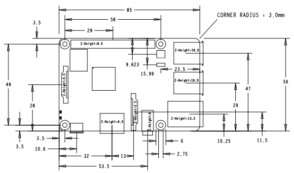

The Raspberry Pi 3 Model B+ is the latest product in the Raspberry Pi 3 range, boasting a 64-bit quad core processor running at 1.4GHz, dual-band 2.4GHz and 5GHz wireless LAN, Bluetooth 4.2/BLE, faster Ethernet, and PoE capability via a separate PoE HAT.
The dual-band wireless LAN comes with modular compliance certification, allowing the board to be designed into end products with significantly reduced wireless LAN compliance testing, improving both cost and time to market.
The Raspberry Pi 3 Model B+ maintains the same mechanical footprint as both the Raspberry Pi 2 Model B and the Raspberry Pi 3 Model B.
Specifications
| Processor | Broadcom BCM2837B0, Cortex-A53 64-bit SoC @ 1.4GHz |
| Memory | 1GB LPDDR2 SDRAM |
| Connectivity |
|
| Access | Extended 40-pin GPIO header |
| Video & sound |
|
| Multimedia | H.264, MPEG-4 decode (1080p30); H.264 encode (1080p30); OpenGL ES 1.1, 2.0 graphics |
| SD card support | Micro SD format for loading operating system and data storage. |
| Input power |
|
| Environment | Operating temperature, 0-50°C. |
| Compliance | For a full list of local and regional product approvals, please visit www.raspberrypi.org/products/raspberry - pi-3-model-b+. |
| Production lifetime | The Raspberry Pi 3 Model B+ will remain in production until at least January 2023. |
Physical Specifications
Warnings
-
This product should only be connected to an external power supply rated at 5V/2.5 A DC. Any external power supply used with the Raspberry Pi 3 Model B+ shall comply with relevant regulations and standards applicable in the country of intended use.
-
This product should be operated in a well-ventilated environment and, if used inside a case, the case should not be covered.
-
Whilst in use, this product should be placed on a stable, flat, non-conductive surface and should not be contacted by conductive items.
-
The connection of incompatible devices to the GPIO connection may affect compliance, result in damage to the unit, and invalidate the warranty.
-
All peripherals used with this product should comply with relevant standards for the country of use and be marked accordingly to ensure that safety and performance requirements are met. These articles include but are not limited to keyboards, monitors, and mice when used in conjunction with the Raspberry Pi.
-
All peripherals used with this product should comply with relevant standards for the country of use and be marked accordingly to ensure that safety and performance requirements are met. These articles include but are not limited to keyboards, monitors, and mice when used in conjunction with the Raspberry Pi.
Safety Instructions
To avoid malfunction of or damage to this product, please observe the following:-
Do not expose to water or moisture, or place on a conductive surface whilst in operation.
-
Do not expose to heat from any source; the Raspberry Pi 3 Model B+ is designed for reliable operation at normal ambient temperatures.
-
Take care whilst handling to avoid mechanical or electrical damage to the printed circuit board and connectors.
-
Whilst it is powered, avoid handling the printed circuit board, or only handle it by the edges to minimise the risk of electrostatic discharge damage.